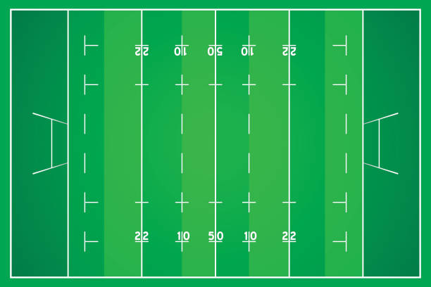

Dans un premier temps je vais vous expliquer les règles de ce sport. Tout d'abord il y a un terrain qui fait 100m de long sur 50m de large. Sur ce terrain sont répartis 30 joueurs sachant qu'une équipe est constituée de 15 joueurs il y a donc deux équipes sur le terrain. Le but du jeu est simple l'équipe qui marque le plus de point remporte le match. Le match dure 80 minutes soit deux mi-temps de 45minutes
Dans ce deuxième paragraphe je vais vous expliquer les règles essentielles à savoir sur le rugby. La règle la plus importante est qu'il ne faut jamais faire de passe en avant sinon l'arbitre siffle en avant ce qui entraine une mélée. Une mélé c'est un regroupement de deux fois 8 joueurs composé d'une premiere ligne composée de trois joueurs d'une deuxième ligne composée de deux joueurs et d'une troisième ligne composée de trois joueurs. Quand le ballon sort des limitations du terrain il y a touche. Une touche peut être composée entre 3 et 7 joueurs de chaque équipe. Les joueurs en touche doivent porter un joueur peu importe lequel mais l'objectif est d'attraper la balle.
 autre image